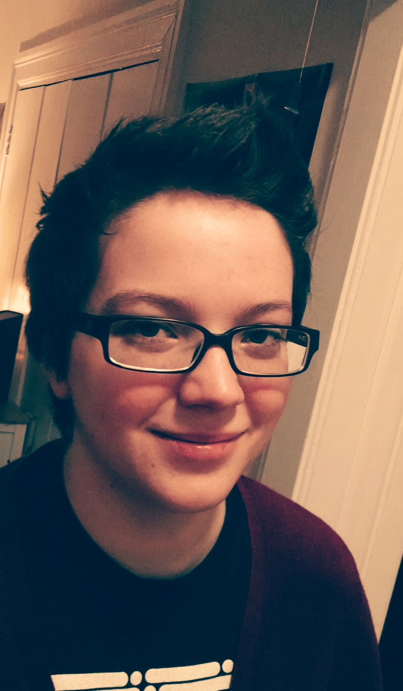

HomePlease note that this site is currently under contsruction. If you are looking for something and cannot find it, please email williaajj@gmail.com. I am a librarian with a BA '14 in English from Wellesley College and a MLIS '18 from Simmons College currently employed at Emmanuel College's Cardinal Cushing Library in Reference Services. After leaving Wellesley I moved back home to work at an old summer job, frequently visiting the public library down the road from me. After a time visiting became volunteering, and volunteering became working part time. I was so in love with the library I began researching opportunities to further my education and advance in the field. The rest is history. My hobbies include reading almost anything, the extent of which I chronicle on my Goodreads. I also enjoy "platinuming" games on my PS4. A list of games I've earned platinum trophies for can be found here. I also love coffee--roasting, grinding, brewing, drinking--and often check out different cafes on weekends. |
|
|